9. 现代循环神经网络
前一章中我们介绍了循环神经网络的基础知识， 这种网络可以更好地处理序列数据。 我们在文本数据上实现了基于循环神经网络的语言模型， 但是对于当今各种各样的序列学习问题，这些技术可能并不够用。
例如，循环神经网络在实践中一个常见问题是数值不稳定性。 尽管我们已经应用了梯度裁剪等技巧来缓解这个问题， 但是仍需要通过设计更复杂的序列模型可以进一步处理它。 具体来说，我们将引入两个广泛使用的网络， 即门控循环单元（gated recurrent units，GRU）和 长短期记忆网络（long short-term memory，LSTM）。 然后，我们将基于一个单向隐藏层来扩展循环神经网络架构。 我们将描述具有多个隐藏层的深层架构， 并讨论基于前向和后向循环计算的双向设计。 现代循环网络经常采用这种扩展。 在解释这些循环神经网络的变体时， 我们将继续考虑 8节中的语言建模问题。
事实上，语言建模只揭示了序列学习能力的冰山一角。 在各种序列学习问题中，如自动语音识别、文本到语音转换和机器翻译， 输入和输出都是任意长度的序列。 为了阐述如何拟合这种类型的数据， 我们将以机器翻译为例介绍基于循环神经网络的 “编码器－解码器”架构和束搜索，并用它们来生成序列。
9.1. 门控循环单元（GRU）
在 8.7节中， 我们讨论了如何在循环神经网络中计算梯度， 以及矩阵连续乘积可以导致梯度消失或梯度爆炸的问题。 下面我们简单思考一下这种梯度异常在实践中的意义：
我们可能会遇到这样的情况：早期观测值对预测所有未来观测值具有非常重要的意义。 考虑一个极端情况，其中第一个观测值包含一个校验和， 目标是在序列的末尾辨别校验和是否正确。 在这种情况下，第一个词元的影响至关重要。 我们希望有某些机制能够在一个记忆元里存储重要的早期信息。 如果没有这样的机制，我们将不得不给这个观测值指定一个非常大的梯度， 因为它会影响所有后续的观测值。
我们可能会遇到这样的情况：一些词元没有相关的观测值。 例如，在对网页内容进行情感分析时， 可能有一些辅助HTML代码与网页传达的情绪无关。 我们希望有一些机制来跳过隐状态表示中的此类词元。
我们可能会遇到这样的情况：序列的各个部分之间存在逻辑中断。 例如，书的章节之间可能会有过渡存在， 或者证券的熊市和牛市之间可能会有过渡存在。 在这种情况下，最好有一种方法来重置我们的内部状态表示。
在学术界已经提出了许多方法来解决这类问题。 其中最早的方法是“长短期记忆”（long-short-term memory，LSTM） [Hochreiter & Schmidhuber, 1997]， 我们将在 9.2节中讨论。 门控循环单元（gated recurrent unit，GRU） [Cho et al., 2014a] 是一个稍微简化的变体，通常能够提供同等的效果， 并且计算 [Chung et al., 2014]的速度明显更快。 由于门控循环单元更简单，我们从它开始解读。
9.1.1. 门控隐状态
门控循环单元与普通的循环神经网络之间的关键区别在于： 后者支持隐状态的门控。 这意味着模型有专门的机制来确定应该何时更新隐状态， 以及应该何时重置隐状态。 这些机制是可学习的，并且能够解决了上面列出的问题。
9.1.1.1. 重置门和更新门
9.1.1.2. 候选隐状态
9.1.1.3. 隐状态
总之，门控循环单元具有以下两个显著特征：
- 重置门有助于捕获序列中的短期依赖关系。
- 更新门有助于捕获序列中的长期依赖关系。
9.1.4. 小结
- 门控循环神经网络可以更好地捕获时间步距离很长的序列上的依赖关系。
- 重置门有助于捕获序列中的短期依赖关系。
- 更新门有助于捕获序列中的长期依赖关系。
- 重置门打开时，门控循环单元包含基本循环神经网络；更新门打开时，门控循环单元可以跳过子序列。
9.2. 长短期记忆网络（LSTM）
9.2.1. 门控记忆元
长短期记忆网络引入了记忆元（memory cell），或简称为单元（cell）。
为了控制记忆元，我们需要许多门。 其中一个门用来从单元中输出条目，我们将其称为输出门（output gate）。 另外一个门用来决定何时将数据读入单元，我们将其称为输入门（input gate）。 我们还需要一种机制来重置单元的内容，由遗忘门（forget gate）来管理， 这种设计的动机与门控循环单元相同， 能够通过专用机制决定什么时候记忆或忽略隐状态中的输入。
9.2.1.1. 输入门、忘记门和输出门
当前时间步的输入和前一个时间步的隐状态 作为数据送入长短期记忆网络的门中， 如 图9.2.1所示。 它们由三个具有sigmoid激活函数的全连接层处理， 以计算输入门、遗忘门和输出门的值。 因此，这三个门的值都在(0,1)的范围内。
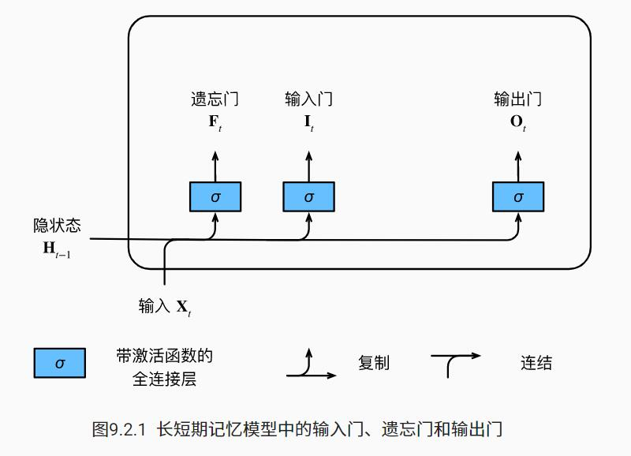
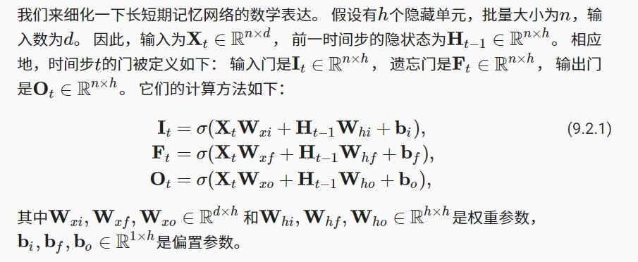
9.2.1.2. 候选记忆元 （candidate memory cell）
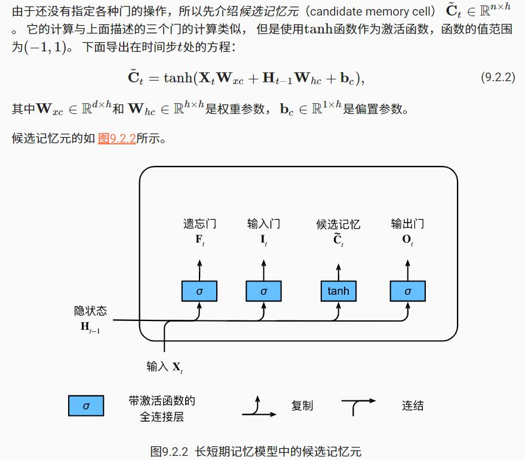
9.2.1.3. 记忆元
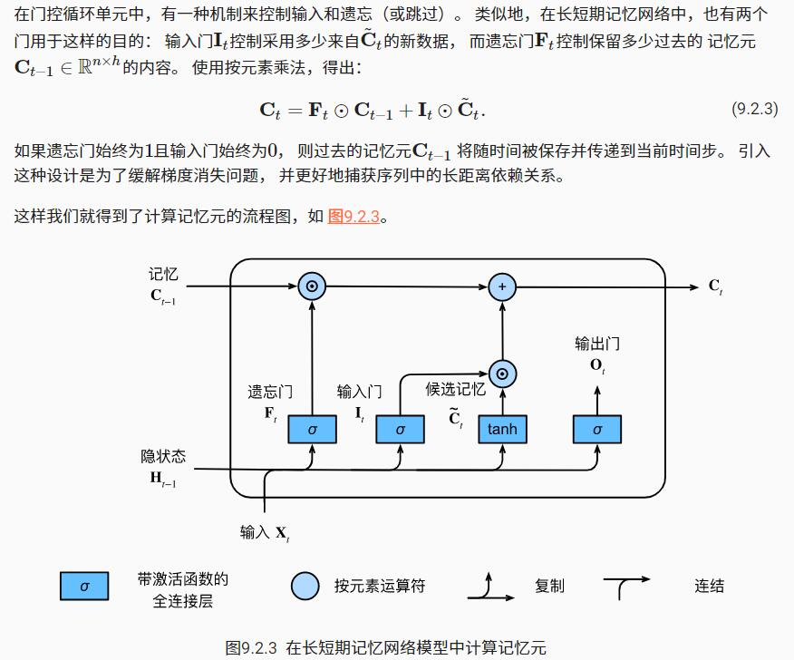
9.2.1.4. 隐状态
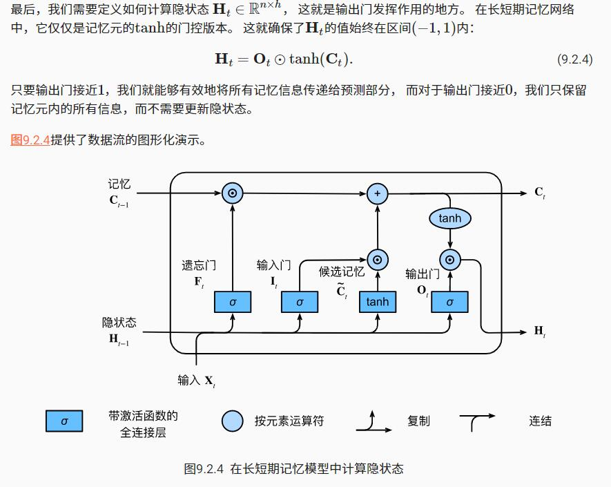
9.2.4. 小结
- 长短期记忆网络有三种类型的门：输入门、遗忘门和输出门。
- 长短期记忆网络的隐藏层输出包括“隐状态”和“记忆元”。只有隐状态会传递到输出层，而记忆元完全属于内部信息。
- 长短期记忆网络可以缓解梯度消失和梯度爆炸。
9.3. 深度循环神经网络
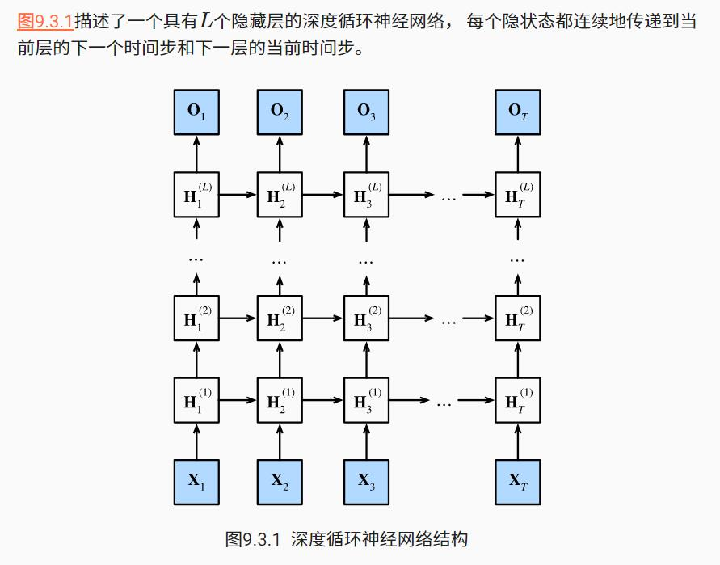
9.3.1. 函数依赖关系
我们可以将深度架构中的函数依赖关系形式化， 这个架构是由 图9.3.1中描述了L个隐藏层构成。 后续的讨论主要集中在经典的循环神经网络模型上， 但是这些讨论也适应于其他序列模型。
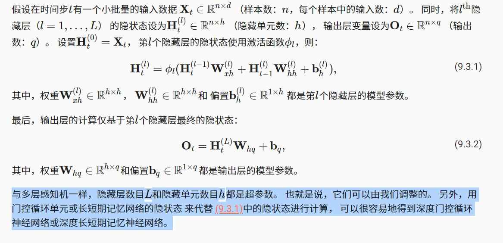
9.3.4. 小结
在深度循环神经网络中，隐状态的信息被传递到当前层的下一时间步和下一层的当前时间步。
有许多不同风格的深度循环神经网络， 如长短期记忆网络、门控循环单元、或经典循环神经网络。 这些模型在深度学习框架的高级API中都有涵盖。
——————————————————————————
小思考：如果在深层循环神经网络中采用LSTM的隐状态，那么从第二层开始，每层LSTM的输入X_t就是上一层的隐状态H_{t-1}。
——————————————————————————
总体而言，深度循环神经网络需要大量的调参（如学习率和修剪） 来确保合适的收敛，模型的初始化也需要谨慎。
9.4. 双向循环神经网络
9.4.1. 隐马尔可夫模型中的动态规划(先学习动态规划)
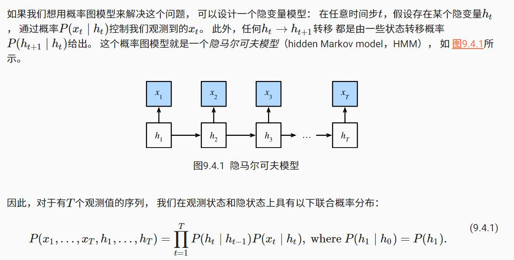
9.4.2. 双向模型
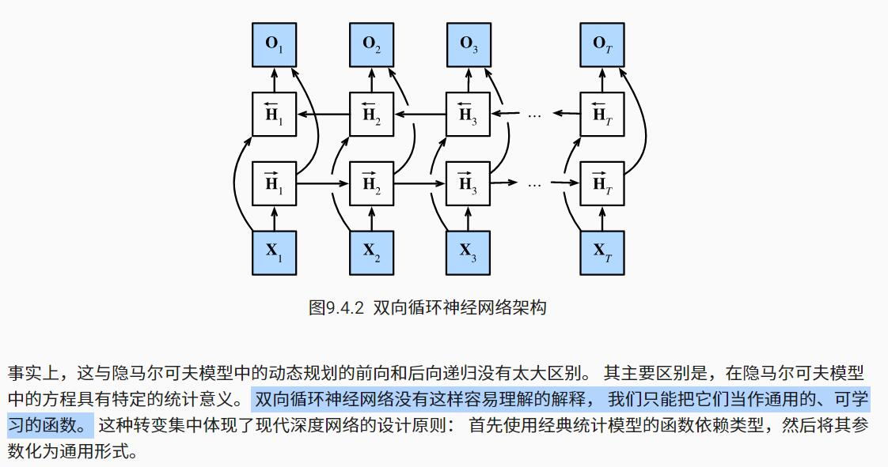
9.4.2.1. 定义
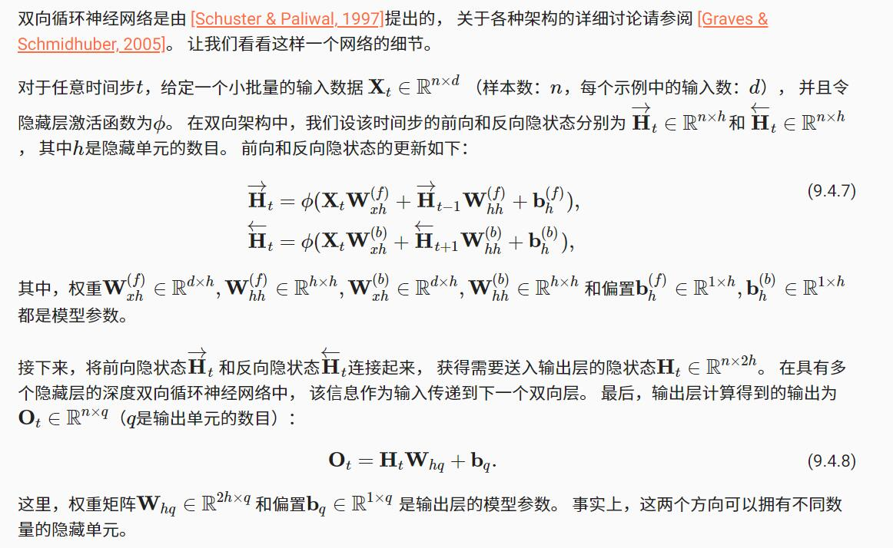
9.4.2.2. 模型的计算代价及其应用
双向循环神经网络的一个关键特性是：使用来自序列两端的信息来估计输出。 也就是说，我们使用来自过去和未来的观测信息来预测当前的观测。 但是在对下一个词元进行预测的情况中，这样的模型并不是我们所需的。 因为在预测下一个词元时，我们终究无法知道下一个词元的下文是什么， 所以将不会得到很好的精度。 具体地说，在训练期间，我们能够利用过去和未来的数据来估计现在空缺的词； 而在测试期间，我们只有过去的数据，因此精度将会很差。
另一个严重问题是，双向循环神经网络的计算速度非常慢。 其主要原因是网络的前向传播需要在双向层中进行前向和后向递归， 并且网络的反向传播还依赖于前向传播的结果。 因此，梯度求解将有一个非常长的链。
双向层的使用在实践中非常少，并且仅仅应用于部分场合。 例如，填充缺失的单词、词元注释（例如，用于命名实体识别） 以及作为序列处理流水线中的一个步骤对序列进行编码（例如，用于机器翻译）。
9.4.4. 小结
- 在双向循环神经网络中，每个时间步的隐状态由当前时间步的前后数据同时决定。
- 双向循环神经网络与概率图模型中的“前向-后向”算法具有相似性。
- 双向循环神经网络主要用于序列编码和给定双向上下文的观测估计。
- 由于梯度链更长，因此双向循环神经网络的训练代价非常高。
9.5. 机器翻译与数据集
语言模型是自然语言处理的关键， 而机器翻译是语言模型最成功的基准测试。 因为机器翻译正是将**输入序列转换成输出序列的 序列转换模型（sequence transduction）**的核心问题。
机器翻译（machine translation）指的是 将序列从一种语言自动翻译成另一种语言。
9.5.6. 小结
- 机器翻译指的是将文本序列从一种语言自动翻译成另一种语言。
- 使用单词级词元化时的词表大小，将明显大于使用字符级词元化时的词表大小。为了缓解这一问题，我们可以将低频词元视为相同的未知词元。
- 通过截断和填充文本序列，可以保证所有的文本序列都具有相同的长度，以便以小批量的方式加载。
9.6. 编码器-解码器架构
正如我们在 9.5节中所讨论的， 机器翻译是序列转换模型的一个核心问题， 其输入和输出都是长度可变的序列。 为了处理这种类型的输入和输出， 我们可以设计一个包含两个主要组件的架构： 第一个组件是一个编码器（encoder）： 它接受一个长度可变的序列作为输入， 并将其转换为具有固定形状的编码状态。 第二个组件是解码器（decoder）： 它将固定形状的编码状态映射到长度可变的序列。 这被称为编码器-解码器（encoder-decoder）架构， 如 图9.6.1 所示。
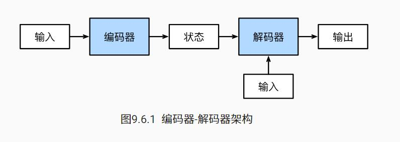
9.6.4. 小结¶
- “编码器－解码器”架构可以将长度可变的序列作为输入和输出，因此适用于机器翻译等序列转换问题。
- 编码器将长度可变的序列作为输入，并将其转换为具有固定形状的编码状态。
- 解码器将具有固定形状的编码状态映射为长度可变的序列。
9.7. 序列到序列学习（seq2seq）
本节，我们将使用两个循环神经网络的编码器和解码器， 并将其应用于序列到序列（sequence to sequence，seq2seq）类的学习任务 [Sutskever et al., 2014][Cho et al., 2014b]。
遵循编码器－解码器架构的设计原则， 循环神经网络编码器使用长度可变的序列作为输入， 将其转换为固定形状的隐状态。 换言之，输入序列的信息被编码到循环神经网络编码器的隐状态中。
为了连续生成输出序列的词元， 独立的循环神经网络解码器是基于输入序列的编码信息 和输出序列已经看见的或者生成的词元来预测下一个词元。
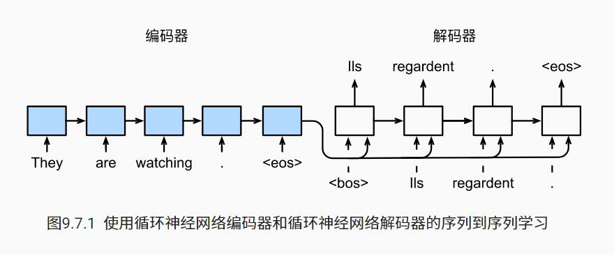
在 图9.7.1中， 特定的“
——————————————————————————————
编码器的最终隐状态H属于R(n*h),是一个矩阵，隐状态是个矩阵，隐含整个输入序列的信息。
——————————————————————————————
9.7.1. 编码器
从技术上讲，编码器将长度可变的输入序列转换成 形状固定的上下文变量c， 并且将输入序列的信息在该上下文变量中进行编码。
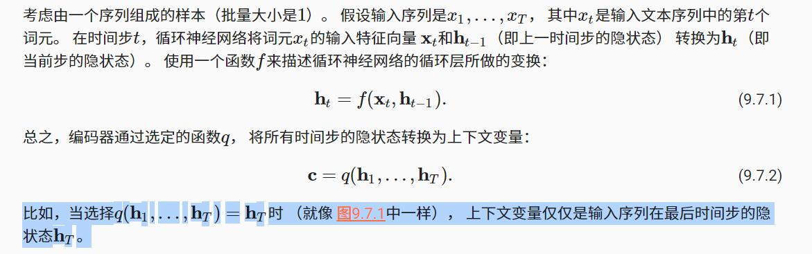
到目前为止，我们使用的是一个单向循环神经网络来设计编码器， 其中隐状态只依赖于输入子序列， 这个子序列是由输入序列的开始位置到隐状态所在的时间步的位置 （包括隐状态所在的时间步）组成。 我们也可以使用双向循环神经网络构造编码器， 其中隐状态依赖于两个输入子序列， 两个子序列是由隐状态所在的时间步的位置之前的序列和之后的序列 （包括隐状态所在的时间步）， 因此隐状态对整个序列的信息都进行了编码。
现在，让我们实现循环神经网络编码器。 注意，我们使用了嵌入层（embedding layer） 来获得输入序列中每个词元的特征向量。 嵌入层的权重是一个矩阵， 其行数等于输入词表的大小（vocab_size）， 其列数等于特征向量的维度（embed_size）。 对于任意输入词元的索引i， 嵌入层获取权重矩阵的第i行（从0开始）以返回其特征向量。
9.7.2. 解码器
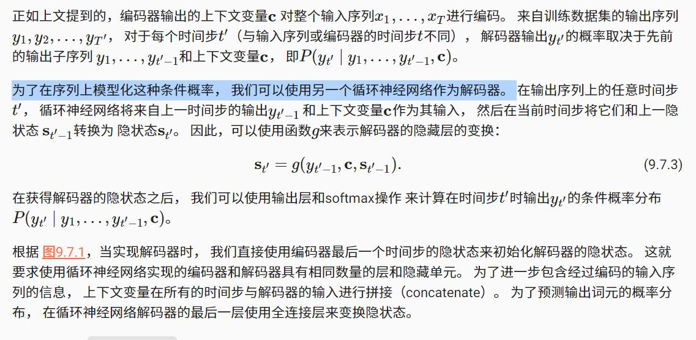
————————————————————————————
小思考：使用神经网络实例化（模型化）语言模型的条件概率，对于P(A|B)，就是使用B作为模型输入，A作为模型输出。
————————————————————————————
9.7.7. 小结
- 根据“编码器-解码器”架构的设计， 我们可以使用两个循环神经网络来设计一个序列到序列学习的模型。
- 在实现编码器和解码器时，我们可以使用多层循环神经网络。
- 我们可以使用遮蔽来过滤不相关的计算，例如在计算损失时。
- 在“编码器－解码器”训练中，强制教学方法将原始输出序列（而非预测结果）输入解码器。
- BLEU是一种常用的评估方法，它通过测量预测序列和标签序列之间的nn元语法的匹配度来评估预测。